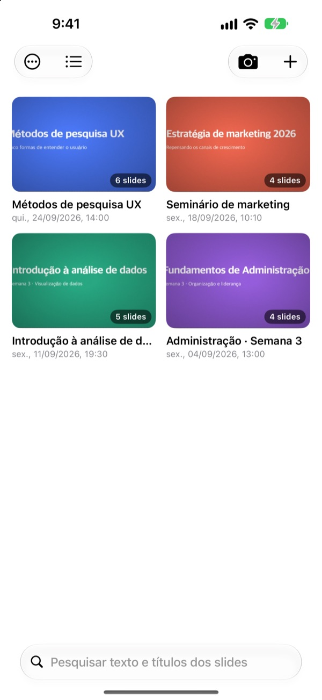
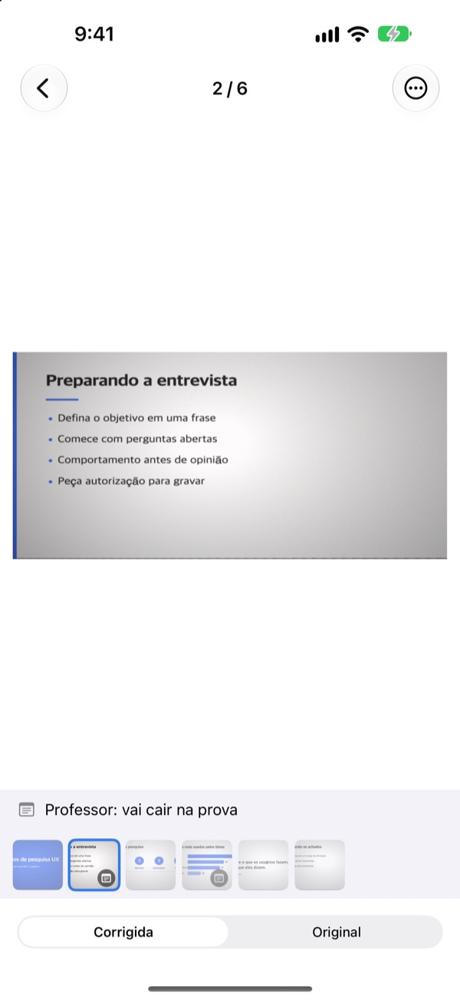
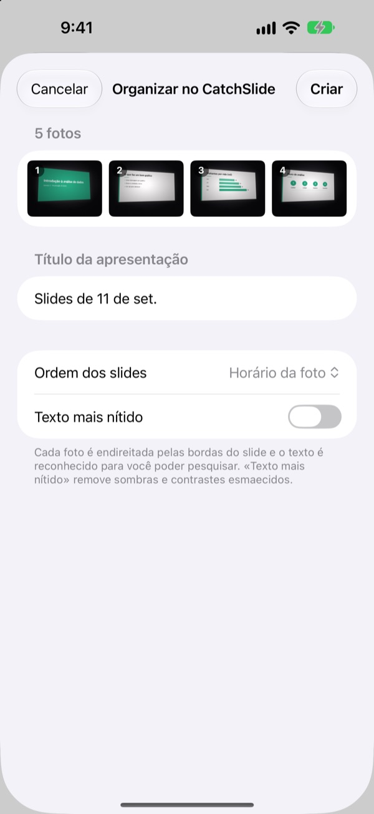
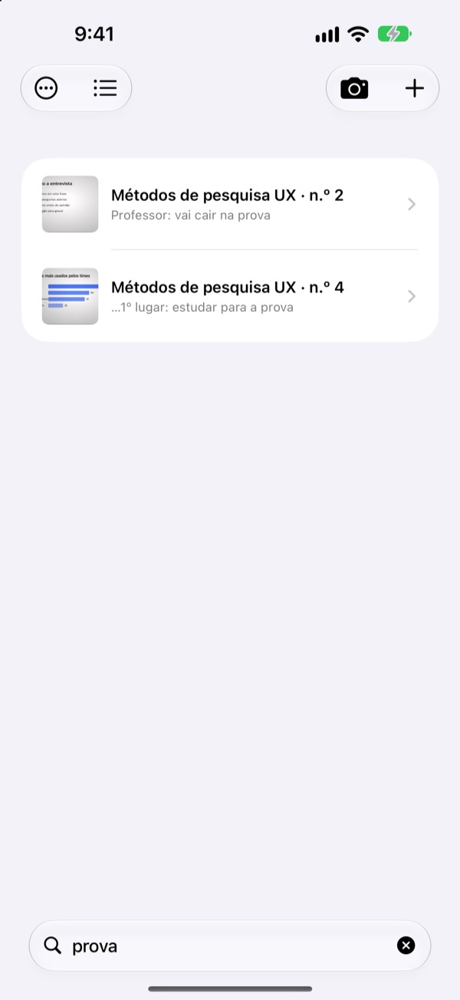

Foto de lado.
Slide de frente.
A câmera acha os quatro cantos do slide, deixa tudo reto e corta o que está em volta. Os slides que você fotografa em sequência ficam juntos na mesma apresentação.
Uma compra, todos os recursos. Sem assinatura e sem conta.

Endireite você mesmo
Esta foto foi tirada torta, de um lugar na lateral da sala. O contorno verde mostra os cantos encontrados.
Já abriu a galeria para estudar e não achou o slide?
Slides fotografados do fundo da sala sempre saem tortos e se perdem entre selfies e notinhas. Numa sala em silêncio, só o barulho do clique já dá vergonha. O CatchSlide fotografa sem som, endireita cada slide e guarda tudo junto por apresentação.
Reto na hora do clique
A câmera acompanha ao vivo os quatro cantos do slide e fica verde quando encontra. Mesmo de lado, o slide sai como se fosse visto de frente, sem o fundo.
Sem som de clique. Ative a Captura automática e cada slide novo é fotografado sozinho, pulando as fotos tremidas.

Fotos que você já tem, de uma vez
Escolha várias fotos da aula no app Fotos e compartilhe com o CatchSlide. Elas são endireitadas e salvas como uma só apresentação, na ordem em que foram tiradas.
Com Texto mais nítido, somem as sombras e o contraste apagado.

Ache com a palavra que você lembra
O CatchSlide lê o texto de cada slide no próprio aparelho. Semanas depois, uma palavra só já leva você ao slide certo.
As notas que você coloca nos slides também entram na busca. Marque alguns com prova e toda a matéria aparece numa busca só.

Comece em três passos
- 1
Abra a câmera
Pelo botão na lista, pelo widget da Tela de Início ou pela Tela Bloqueada.
- 2
Enquadre o slide
Quando os cantos ficarem verdes, toque no obturador ou deixe a captura automática fazer isso.
- 3
Revise por apresentação
Busque, adicione notas e exporte um PDF para estudar.
O que dá para fazer com uma apresentação
- Gravação
- Grave enquanto fotografa e ouça cada slide a partir do momento em que ele foi fotografado
- Transcrição
- Transforma a gravação em texto, mostra o que foi dito em cada slide e entra na busca
- Resumo com IA
- Resume a apresentação a partir do texto dos slides e da transcrição (iOS 26 ou posterior em aparelhos compatíveis com Apple Intelligence)
- Material de revisão com um, dois ou quatro slides por página
- Markdown
- Um .zip pronto para o Notion ou o Obsidian
- PowerPoint
- Exporta um .pptx com a transcrição nas anotações do apresentador
- Mesclar
- Escolha várias apresentações e junte em uma
- Sincronização com o iCloud
- Ative para ver suas apresentações nos outros aparelhos com o mesmo Apple ID. Vem desativada
- Widgets
- Abrem a câmera direto da Tela de Início ou da Tela Bloqueada
Reconhecimento de texto, transcrição e resumos com IA acontecem no próprio aparelho.
Compre uma vez e tenha tudo
CatchSlide
- Fotos sem som, captura automática e endireitamento
- Importação de várias fotos do app Fotos
- Slides por apresentação, busca no texto e nas notas
- Gravação, transcrição e resumo com IA
- Exportação para PDF, Markdown e PowerPoint
- Sincronização com o iCloud e widgets
Gorjeta (opcional)
- Se o app está ajudando, você pode mandar uma gorjetinha para o desenvolvedor
- A gorjeta não libera nada. Todos os recursos funcionam sem ela
Fica na tela Meus dados.
Sem assinatura e sem compras para liberar recursos. Confira o preço do seu país na App Store.
Perguntas frequentes
Como fotografo um slide?
Abra a câmera e enquadre o slide. Quando os cantos ficarem verdes, toque no obturador. Com a captura automática ativada, o próximo slide é fotografado sozinho sempre que muda.
Faz barulho de clique?
Não. O quadro é salvo direto da câmera, então fica em silêncio em qualquer país.
Por que minhas fotos ficaram numa apresentação só?
Se você tira a próxima foto em até 5 minutos depois da anterior, ela entra na mesma apresentação. Toque no título na lista para renomear e use Mesclar apresentações para juntar as que ficaram separadas.
Posso adicionar fotos que já tirei?
Pode. Selecione no app Fotos e compartilhe com o CatchSlide, ou toque em ＋ na lista e escolha Importar de Fotos. Elas são endireitadas e salvas como uma apresentação, na ordem em que foram tiradas.
Os cantos foram encontrados errado.
Abra o slide, escolha Ajustar cantos no menu ⋯ e arraste os quatro cantos para o lugar. Detecção automática procura de novo e Imagem inteira usa a foto toda. O original fica sempre guardado, então dá para refazer quando quiser.
Dá para buscar o texto dos slides?
Digite uma palavra no campo de busca no topo da lista. A busca passa pelo texto dos slides, títulos, notas e transcrições e leva direto ao slide. O reconhecimento de texto acontece no aparelho.
Como exporto um PDF?
Dentro de uma apresentação, abra o menu de compartilhamento, escolha Exportar como PDF e defina um, dois ou quatro slides por página. Pela folha de compartilhamento, salve em Arquivos ou envie para outro app.
Como mudo a ordem ou apago slides?
Dentro de uma apresentação, toque e segure um slide e arraste. No mesmo menu você apaga ou compartilha um slide, e com Selecionar apaga vários de uma vez.
Como funcionam a gravação e o resumo com IA?
Ative Gravar no topo da câmera e cada slide guarda o áudio daquele momento. Em Notas da apresentação, Resumir com IA cria um resumo a partir do texto dos slides e da transcrição. O resumo com IA precisa do iOS 26 ou posterior num aparelho compatível com Apple Intelligence.
Onde ficam meus slides e gravações?
No seu aparelho. Eles só vão para o seu próprio iCloud se você ativar Sincronização em Meus dados, e não precisa de conta. Veja mais na Política de Privacidade.
Dúvidas, bugs ou ideias? Escreva para leeo@kakao.com.